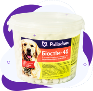

- профілактика вітамінно-мінеральної недостатності
- підвищення імунітету
- профілактика захворювань системи травлення та дихальної системи
- стимулювання репродуктивної функції і росту
- покращення стану шерсті та шкіри тварин
Біостім-40
білкова мінерально-вітамінна
кормова добавка для собак
Кількість: 1000 шт. | Придатність: 18 міс.

Показання:
Вітамінній склад:
Протипоказання:
не має.
Застереження при
використанні:
використанні:

необхідно забезпечити тварині постійний доступ до питної води

Білкова мінерально-вітамінна кормова добавка поповнює організм собак необхідною кількістю поживних речовин, вітамінів та мінеральних елементів, що сприяє активізації обміну речовин у молодих та дорослих тварин
Як застосовувати
цуценята: 5-6 таб. на добу
дрібні породи до 10 кг: 2-3 таб. на добу
середні породи до 30 кг: 5-6 таб. на добу
великі породи, вагітні та лактуючі понад 30 кг: 8-10 таб. на добу
У період лактації та вагітності кількість добавки може бути збільшена на 30 %
Мінімальний курс застосування 4 тижні
Зберігати у сухому темному місці
0-25 C, не вище 85% вологості